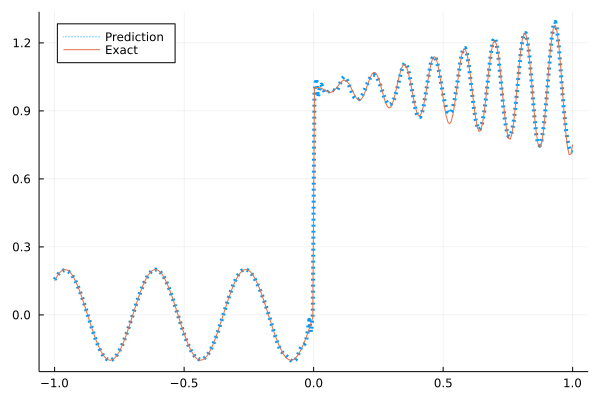

Fitting a nonlinear discontinuous function
This example is taken from here.
The following discontinuous function with discontinuity at $x=0$ location is approximated by Siren.
\[u(x)= \begin{cases}0.2 \sin (18 x) & \text { if } x \leq 0 \\ 1+0.3 x \cos (54 x) & \text { otherwise }\end{cases}\]
The domain is $[-1,1]$. The number of training points used is 300.
Import pacakges
using Lux, Sophon
using NNlib, Optimisers, Plots, Random, Statistics, ZygoteDataset
function u(x)
if x <= 0
return 0.2 * sin(18 * x)
else
return 1 + 0.3 * x * cos(54 * x)
end
end
function generate_data(n=300)
x = reshape(collect(range(-1.0f0, 1.0f0, n)), (1, n))
y = u.(x)
return (x, y)
endgenerate_data (generic function with 2 methods)Let's visualize the data.
x, y = generate_data()
Plots.plot(vec(x), vec(y),label=false)
Model
We use four hidden layers with 50 neurons in each.
model = Siren(1,50,50,50,50,1)Chain(
layer_1 = Sine(1 => 50, sin), # 100 parameters, plus 1
layer_2 = Sine(50 => 50, sin), # 2_550 parameters
layer_3 = Sine(50 => 50, sin), # 2_550 parameters
layer_4 = Sine(50 => 50, sin), # 2_550 parameters
layer_5 = Sine(50 => 1, identity), # 51 parameters
) # Total: 7_801 parameters,
# plus 1 states, summarysize 364 bytes.Train the model
function train(model)
ps, st = Lux.setup(Random.default_rng(), model)
opt = Adam()
st_opt = Optimisers.setup(opt,ps)
function loss(model, ps, st, x, y)
y_pred, _ = model(x, ps, st)
mes = mean(abs2, y_pred .- y)
return mes
end
for i in 1:2000
gs = gradient(p->loss(model,p,st,x,y), ps)[1]
st_opt, ps = Optimisers.update(st_opt, ps, gs)
if i % 100 == 1 || i == 100
println("Epoch $i || ", loss(model,ps,st,x,y))
end
end
return ps, st
endtrain (generic function with 1 method)Results
@time ps, st = train(model)
y_pred = model(x,ps,st)[1]
Plots.plot(vec(x), vec(y_pred),label="Prediction",line = (:dot, 4))
Plots.plot!(vec(x), vec(y),label="Exact",legend=:topleft)Epoch 1 || 0.7627252407113413
Epoch 100 || 0.0012899792731756341
Epoch 101 || 0.0012695328928600525
Epoch 201 || 0.0005799172628986208
Epoch 301 || 0.0004207136160579706
Epoch 401 || 0.00034986278494748504
Epoch 501 || 0.00030059176922620423
Epoch 601 || 0.0002550143957524046
Epoch 701 || 0.00020897146888414005
Epoch 801 || 0.000163443097251188
Epoch 901 || 0.00012216272087020718
Epoch 1001 || 8.929413589098442e-5
Epoch 1101 || 6.587480014679999e-5
Epoch 1201 || 4.9564749451152954e-5
Epoch 1301 || 3.7669112856682266e-5
Epoch 1401 || 2.8619121611968066e-5
Epoch 1501 || 2.1691198550733796e-5
Epoch 1601 || 1.6497544357551065e-5
Epoch 1701 || 1.2717640154519407e-5
Epoch 1801 || 1.0029354490197045e-5
Epoch 1901 || 8.123150836162018e-6
63.131754 seconds (65.95 M allocations: 8.033 GiB, 3.31% gc time, 93.34% compilation time)
Gaussian activation function
We can also try using a fully connected net with the gaussian activation function.
model = FullyConnected((1,50,50,50,50,1), gaussian)Chain(
layer_1 = Dense(1 => 50, gaussian), # 100 parameters
layer_2 = Dense(50 => 50, gaussian), # 2_550 parameters
layer_3 = Dense(50 => 50, gaussian), # 2_550 parameters
layer_4 = Dense(50 => 50, gaussian), # 2_550 parameters
layer_5 = Dense(50 => 1), # 51 parameters
) # Total: 7_801 parameters,
# plus 0 states, summarysize 80 bytes.@time ps, st = train(model)
y_pred = model(x,ps,st)[1]
Plots.plot(vec(x), vec(y_pred),label="Prediction",line = (:dot, 4))
Plots.plot!(vec(x), vec(y),label="Exact",legend=:topleft)Epoch 1 || 0.3124573467100736
Epoch 100 || 0.01877854085660395
Epoch 101 || 0.018778056065298716
Epoch 201 || 0.010999603898630453
Epoch 301 || 0.008351614750678272
Epoch 401 || 0.006336463318117327
Epoch 501 || 0.004699036957263163
Epoch 601 || 0.0035991140040724876
Epoch 701 || 0.0028696290171386176
Epoch 801 || 0.00285866264925811
Epoch 901 || 0.0020854908484309485
Epoch 1001 || 0.0023677455071165724
Epoch 1101 || 0.001898179657376352
Epoch 1201 || 0.0014335380016041728
Epoch 1301 || 0.001270130351654935
Epoch 1401 || 0.0011406202159036007
Epoch 1501 || 0.0011687809628053278
Epoch 1601 || 0.0010130686824452828
Epoch 1701 || 0.0011240382524737012
Epoch 1801 || 0.000766433329014346
Epoch 1901 || 0.0008464032511355583
14.296728 seconds (12.98 M allocations: 4.386 GiB, 5.05% gc time, 68.88% compilation time)
Quadratic activation function
quadratic is much cheaper to compute compared to the Gaussain activation function.
model = FullyConnected((1,50,50,50,50,1), quadratic)Chain(
layer_1 = Dense(1 => 50, quadratic), # 100 parameters
layer_2 = Dense(50 => 50, quadratic), # 2_550 parameters
layer_3 = Dense(50 => 50, quadratic), # 2_550 parameters
layer_4 = Dense(50 => 50, quadratic), # 2_550 parameters
layer_5 = Dense(50 => 1), # 51 parameters
) # Total: 7_801 parameters,
# plus 0 states, summarysize 80 bytes.@time ps, st = train(model)
y_pred = model(x,ps,st)[1]
Plots.plot(vec(x), vec(y_pred),label="Prediction",line = (:dot, 4))
Plots.plot!(vec(x), vec(y),label="Exact",legend=:topleft)Epoch 1 || 0.4159558248555467
Epoch 100 || 0.01427087926478879
Epoch 101 || 0.01408686789890712
Epoch 201 || 0.008349228326745728
Epoch 301 || 0.006351946817807019
Epoch 401 || 0.004618700462250316
Epoch 501 || 0.003272016728569031
Epoch 601 || 0.002587053290506747
Epoch 701 || 0.0025126460194645783
Epoch 801 || 0.0019514681696254355
Epoch 901 || 0.0017642755058829163
Epoch 1001 || 0.0016200919628774223
Epoch 1101 || 0.0014969703649425818
Epoch 1201 || 0.0013914649314774484
Epoch 1301 || 0.0013054885212401596
Epoch 1401 || 0.0012989690097068298
Epoch 1501 || 0.0010761360749597401
Epoch 1601 || 0.0016653119468795518
Epoch 1701 || 0.0009418777386836146
Epoch 1801 || 0.0007135623471802851
Epoch 1901 || 0.000546344100724836
8.885935 seconds (8.03 M allocations: 3.984 GiB, 5.91% gc time, 69.65% compilation time)
An activation function I designed
model = FullyConnected((1,50,50,50,50,1), wu)Chain(
layer_1 = Dense(1 => 50, wu), # 100 parameters
layer_2 = Dense(50 => 50, wu), # 2_550 parameters
layer_3 = Dense(50 => 50, wu), # 2_550 parameters
layer_4 = Dense(50 => 50, wu), # 2_550 parameters
layer_5 = Dense(50 => 1), # 51 parameters
) # Total: 7_801 parameters,
# plus 0 states, summarysize 80 bytes.@time ps, st = train(model)
y_pred = model(x,ps,st)[1]
Plots.plot(vec(x), vec(y_pred),label="Prediction",line = (:dot, 4))
Plots.plot!(vec(x), vec(y),label="Exact",legend=:topleft)Epoch 1 || 0.4111495911890575
Epoch 100 || 0.03090947955160864
Epoch 101 || 0.030766113867300913
Epoch 201 || 0.01725271362840528
Epoch 301 || 0.012435008886545232
Epoch 401 || 0.008718224385954512
Epoch 501 || 0.007276942671161985
Epoch 601 || 0.006037149313722425
Epoch 701 || 0.003904166995802772
Epoch 801 || 0.002390649214010965
Epoch 901 || 0.001515164802777817
Epoch 1001 || 0.0011194848258974102
Epoch 1101 || 0.0008278248762865838
Epoch 1201 || 0.0006155003925962364
Epoch 1301 || 0.00048308895920002936
Epoch 1401 || 0.0003957002803392195
Epoch 1501 || 0.00033042738621235485
Epoch 1601 || 0.00028166515168139456
Epoch 1701 || 0.00023919554049635255
Epoch 1801 || 0.00020251319789772648
Epoch 1901 || 0.00016772334699464742
10.211933 seconds (7.98 M allocations: 3.982 GiB, 5.16% gc time, 59.19% compilation time)